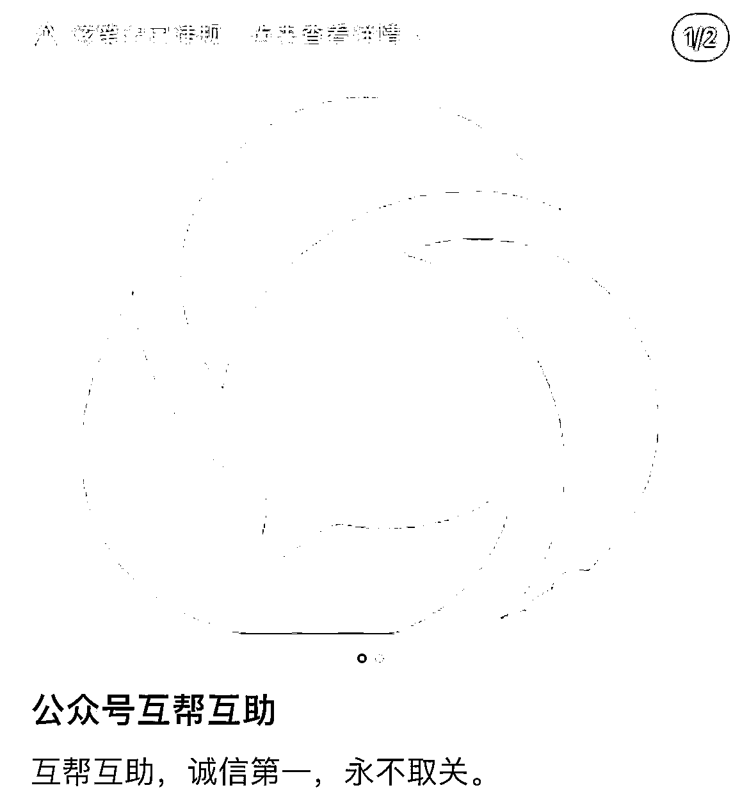
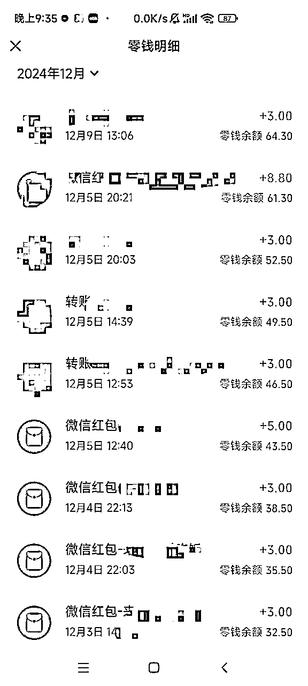
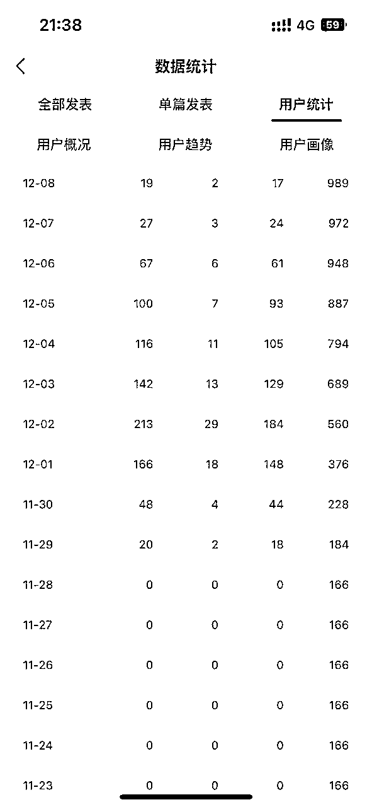

来源：https://hvcb4uaejm1.feishu.cn/docx/MCnVd8eHVoV1qQx7ioPc7T1bnGc
大家好，我是顾希希，00年，努力在未来2年内抛弃主业，做到只工作不上班。
我在十月底的时候加入生财，这期报了公众号的航海，在航海前我的公众号只有166个粉丝，我计划在航海前就达到流量主的门槛，虽然在制定这个目标的时候，自己心底也并不相信。
5天300多的粉丝，并不是很容易。
但最后成功得做到了。
我做的动作都有这些。
发现有些比如问答，壁纸、头像不是很适合我。
还看到了买粉的操作，就去了淘宝咨询了相关的店铺，粉字触发了相关的关键词，被淘宝商家提醒了。而且问了几家，也并没有找到可以接这种的，就没有得到相关的报价。
最后自己就去小红书平台搜公众号互暖的帖子，然后和别人评论留言，互相关注。后来发现效率很低，因为别人并不会实时回复，关注的话，很有可能出现自己给别人送粉的现象。

而且直接发布公众号互关的帖子，会直接被判违规。不要提及到公众号名字，以及公众号自己页面的截图。（小红书对于到站外引流管的比较严格。）
引流关注3人
小红书我的私信页面——右上角——发现群聊——群聊广场，搜索“公众号互粉、公众号互数据”等，就可以加入群聊里，在群聊中可以看到在线的人数，活跃度高些，当天互了16个。
这里需要注意一点，可能有些人会要求在关注后把自己的公众号名字私信发到对方公众号里，留作证据，怕被取关。但是最好不要进行这一步，因为官方有可能会监测到这些关键词“互的，公众号名字”等这种。
可以使用比如小红书私发给对方自己关注他的微信号即可。关注对方的微信就使用平时不常用的微信就行，性别设置一下，不然公众号会识别为未知账号，不给对方计数。
再给大家分享个群聊更高效得利用方法。
那就是自己创建一个群聊，带上相关的关键词，基本上很快就会有人申请加群，加群后你就可以立刻和这些人互粉，效率比在群聊中一个个@其他人更快一些。
因为只剩下4天的时间了，每天要互太多个用户，我觉得有些太累了。当时在翻找公众号航海手册的时候，看到了一点就是开始时把自己在其他平台的内容搬运到公众号上，语音的话就转文字等。
而我在此之前，是有个将近3000粉丝的小红书号的，那个号曾经给我自己引流了300多个粉丝，只是后来接不到商单了，自己也没有再维护了。于是，就直接在周五的时候，直接草草得照搬了自己的文字。
剩下做的动作就是在文章的下方告诉读者，在后台发布相关的关键词然后我分享出我的资料。
如果你之前有过引流的内容，那么可以在公众号文章中试试。如果实在没有的话，我建议可以通过小红书来寻找你的对标竞品有哪些比较好的引流内容，自己整理出一份。
我在发布引流产品的第二日早上，还在照常和其他互粉的过程中，我突然发现关注我的人数，比我给其他人互的人数多，于是我才发现自己引流起作用了。当天就来了好几十人。
然后立刻在周末又写了一篇文章，这篇的引流效果更好，虽然浏览量整体上没有那么高，但是引流的效率比上篇好，做的改动的内容是在文章末尾的时候，把自己引流的材料在结尾展示一些，比如截图或者摘抄出一部分，这样的话，读者可能更想直接拿到这份资料。
基本上2篇下来，我的粉丝就增长到了1000人。而后来一部分引流到了微信里。然后整了一个付费社群，一个免费社群，发现付费社群里筛选的人都是比较有素质些，免费社群会出现挑剔，但更活跃。因此在试验后我更偏向于前者。之后还是得跟着生财里的大佬学习下社群的运营。


最后浅浅来个总结。
公众号的互粉增长速度最快的话
资料引导关注>小红书群聊互粉>小红书帖子互粉。
接下来就打算在航海时出个10w+的爆款文章了，也希望各位也早日通过流量主的门槛！